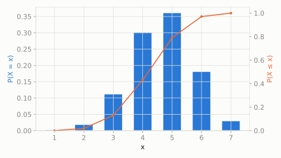

Discrete extended catalog
Fisher's Noncentral Hypergeometric
scipy.stats.nchypergeom_fisher
Intuition
Ordinary hypergeometric assumes every object is equally likely to be drawn, but Fisher's noncentral version adds a bias (the odds ratio) favoring one type over the other -- as if drawing a whole handful of biased marbles from a bag at once, all in one grab.
Formula
\[ p(x;M,n,N,\omega) = \frac{\binom{n}{x}\binom{M-n}{N-x}\omega^x}{\sum_{y}\binom{n}{y}\binom{M-n}{N-y}\omega^y} \]
| parameter | default used here | meaning |
|---|
M | 20 | total number of objects in the bin |
n | 7 | number of Type I objects in the bin |
N | 12 | number of objects drawn (as a single handful) |
odds | 1.5 | odds ratio favoring Type I objects being drawn |
Use cases
- Genetic association studies (biased allele sampling)
- Modeling biased urn/lottery draws where one group is favored
A funny example
A jar has 7 red gumballs and 13 blue ones (20 total). A kid grabs a fistful of 12 gumballs all at once, but red gumballs are stickier and 1.5 times more likely to end up in the grab than blue ones.
What's the probability the kid's fistful contains exactly 5 red gumballs?
Solve it with scipy.stats
import scipy.stats as stats
import numpy as np
dist = stats.nchypergeom_fisher(M=20, n=7, N=12, odds=1.5)
print('P(exactly 5 red):', round(dist.pmf(5), 4))
print('expected red count:', round(dist.mean(), 4))
P(exactly 5 red): 0.3604
expected red count: 4.6575

Theoretical shape at the default parameters above (blue = density/PMF, orange = CDF).